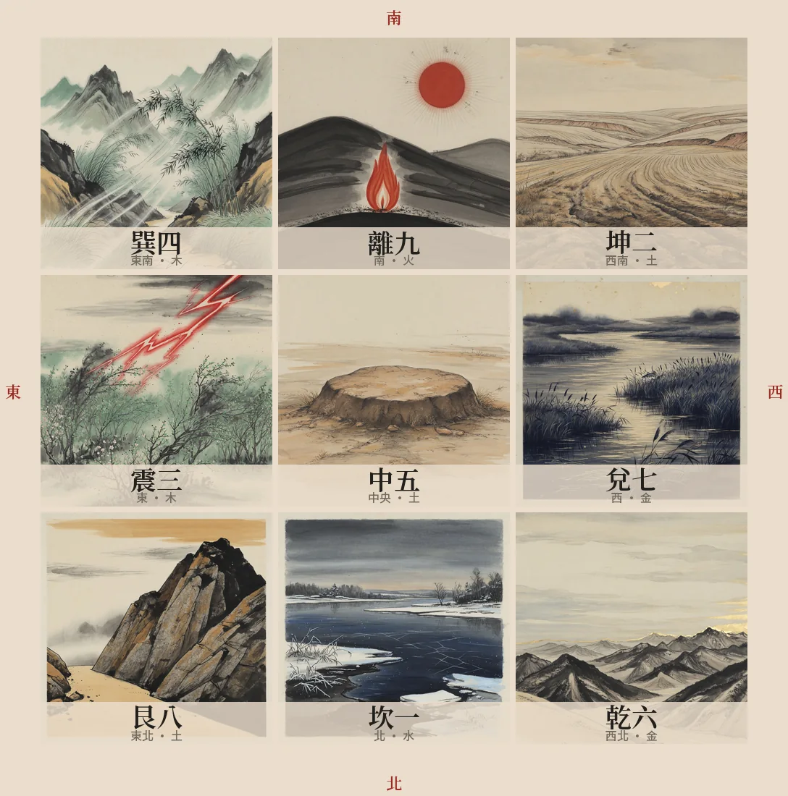

基礎語言
五行干支理解生剋、十天干與十二地支，看到符號能立刻辨認屬性。
不要從吉凶口訣開始。先知道每一層在回答什麼，再慢慢增加細節。
理解生剋、十天干與十二地支，看到符號能立刻辨認屬性。
熟記宮位、方向與五行。九宮是後續所有判斷的座標。
八門看行動，九星看環境，八神看隱微因素，奇儀看具體關係。
先取用神，再看落宮、組合、旺衰和彼此生剋，最後才下結論。
先看每一行管什麼、有哪些成員，再記住固定的生剋順序。

讀盤時先問：「誰生誰？誰剋誰？」生不一定永遠好，也可能是付出與洩耗；剋也不一定永遠壞，也可能代表掌控。
上南下北、左東右西。點一個宮位，右側會顯示記憶重點。

先記核心方向，不要一次背完整萬物類象。八門、九星、八神圖都從左到右依固定順序排列。


每次都照同一順序，避免看到單一凶象就急著下結論。
一盤只處理一個具體問題，時間與情境要清楚。
日干代表自己；工作看開門，財利看生門，合作看六合。
先看用神在哪一宮、宮的五行與是否空亡。
把門、星、神、天地盤干一起看，不拆成孤立吉凶。
比較用神宮和日干宮，最後才形成可驗證的判斷。
用神取錯，後面每一步都會錯得很順。這一節先把「代表這件事的是誰」定下來。
用神，就是盤上代表你所問那件事的那個符號。一張盤有九宮、八門、九星、八神、天地盤干，符號多到可以講出任何答案；用神的作用是先指定「這次只看它」，讓判斷有唯一的焦點。
問工作就看開門，問錢就看生門——用神一旦定了，其餘八宮都只是背景。另外有兩個固定角色：日干代表求測者本人，若填了出生年，年命宮也代表本人，可與日干宮互參。
一盤只處理一個問題、只取一個主用神。同時想問工作又想問感情，請分兩盤起。
| 所問之事 | 主用神 | 輔看 | 取用的理由 |
|---|---|---|---|
| 綜合・不指定 | 值符 | 日干宮 | 無特定事項時，以全盤主導力量通觀。 |
| 求財 | 生門 | 戊 | 生門主財源與生意，戊為財之本氣。 |
| 事業・工作 | 開門 | 值符 | 開門主開創與職務，值符為主導與上位者。 |
| 考試・文書 | 景門 | 天輔、丁 | 景門主文書顯現，天輔為文昌，丁奇主智巧。 |
| 婚姻・感情 | 六合 | 男看乙為己庚為她，女反之 | 六合主婚配與結合，乙庚關係看雙方能否成。 |
| 疾病 | 天芮 | 天心為醫、死門 | 天芮為病星，天心主醫藥，死門看輕重。 |
| 出行 | 值使門 | 所去方位之宮 | 值使主事情走向，再看要去的那個方位宮吉凶。 |
| 官司・爭訟 | 開門 | 驚門為對方、值符為官方 | 開門為我方，驚門為對造，值符為公權力。 |
| 尋人尋物 | 六合 | 落宮即方位 | 六合主隱藏與連結，其落宮方位即搜尋方向。 |
用神五行對照月令：同我為旺、生我為相、我生為休、我剋為囚、剋我為死。旺相才有力量成事。
用神落旬空宮，事情有形無實、名實不符，多半難成，要等出空再論。
把該宮的門、星、神與天地盤干一起讀，吉多吉少先有個底，不拆成孤立吉凶。
用神宮生日干宮，事來就我；日干宮生用神宮，我得出力；相剋則看誰剋誰，決定主動權在哪一方。
下一節的排盤器用的就是這張表：你在「所問之事」選什麼，斷局第一步就取哪個用神，兩邊是同一份資料。
「陰遁六局」不是抽出來的。四個步驟走完，同一個時辰只會得到同一張盤。
冬至到芒種用陽遁，順數；夏至到大雪用陰遁，逆數。分界看節氣，不看月份。
甲、己日為符頭，每五日一元，依上、中、下循環。從最近的符頭往回數五天內即屬該元。
拿節氣與三元去查十八局表，得到一個 1–9 的數字，這就是「幾局」。
從該數字的宮位起戊，六儀三奇依序排：陽遁順飛、陰遁逆飛。地盤成形，一局即定。
| 節氣 | 上元 | 中元 | 下元 |
|---|---|---|---|
| 冬至 | 1 | 7 | 4 |
| 小寒 | 2 | 8 | 5 |
| 大寒 | 3 | 9 | 6 |
| 立春 | 8 | 5 | 2 |
| 雨水 | 9 | 6 | 3 |
| 驚蟄 | 1 | 7 | 4 |
| 春分 | 3 | 9 | 6 |
| 清明 | 4 | 1 | 7 |
| 穀雨 | 5 | 2 | 8 |
| 立夏 | 4 | 1 | 7 |
| 小滿 | 5 | 2 | 8 |
| 芒種 | 6 | 3 | 9 |
| 節氣 | 上元 | 中元 | 下元 |
|---|---|---|---|
| 夏至 | 9 | 3 | 6 |
| 小暑 | 8 | 2 | 5 |
| 大暑 | 7 | 1 | 4 |
| 立秋 | 2 | 5 | 8 |
| 處暑 | 1 | 4 | 7 |
| 白露 | 9 | 3 | 6 |
| 秋分 | 7 | 1 | 4 |
| 寒露 | 6 | 9 | 3 |
| 霜降 | 5 | 8 | 2 |
| 立冬 | 6 | 9 | 3 |
| 小雪 | 5 | 8 | 2 |
| 大雪 | 4 | 7 | 1 |
六十甲子裡的甲日與己日共十二天，就是符頭。從甲子開始，上、中、下三元依序輪轉，每個符頭管五天。
許多流傳的表把己丑己未列中元、己巳己亥列下元，那會讓三元循環斷掉。照上、中、下依序輪轉去記，就不會錯。
排列順序固定是戊、己、庚、辛、壬、癸、丁、丙、乙——前六個是六儀（甲遁其中），後三個是三奇。
從局數指定的那一宮起戊，陽遁按洛書順飛（一→二→三…→九→一），陰遁逆飛（九→八→七…→一→九），九個符號填滿九宮，地盤就定了。地盤一旦排好整局不動，天盤、人盤、神盤都疊在它上面轉。
盤上找不到甲，卻處處是甲。這一節解釋「甲申旬・遁庚」和盤面那兩個紅標籤。
十天干排進盤裡，只有九個位置，甲被藏起來了。甲為尊、為元帥，不直接臨陣，而是躲在六儀之中，由六儀代它出面——這就是「遁甲」兩個字的由來。
六十甲子分成六旬，每旬的第一個時辰叫旬首，都是甲開頭。旬首是哪個甲，甲就遁在對應的那個儀裡。盤面寫「甲申旬・遁庚」，意思是這個時辰屬甲申旬，要找甲，就去看庚在哪一宮。
同一張表還決定旬空：一旬十個時辰配十二地支，配不到的兩個就是空亡，對應的宮位在盤上打斜線。
| 旬首 | 甲遁於 | 旬內時辰 | 旬空 | 空亡宮位 |
|---|---|---|---|---|
| 甲子 | 戊 | 甲子至癸酉 | 戌、亥 | 乾六 |
| 甲戌 | 己 | 甲戌至癸未 | 申、酉 | 坤二、兌七 |
| 甲申 | 庚 | 甲申至癸巳 | 午、未 | 離九、坤二 |
| 甲午 | 辛 | 甲午至癸卯 | 辰、巳 | 巽四 |
| 甲辰 | 壬 | 甲辰至癸丑 | 寅、卯 | 艮八、震三 |
| 甲寅 | 癸 | 甲寅至癸亥 | 子、丑 | 坎一、艮八 |
旬首的隱儀落在地盤哪一宮，那一宮的原始九星就是值符。值符代表全局的主導力量、權威與貴人。
排天盤時，值符星會從原宮轉到「時干所在的那一宮」，其餘八星整圈跟著轉——這就是轉盤奇門的轉法。盤面上標「值符」的那格，就是它轉到的位置。
值符原宮的那個八門就是值使。值使代表事情的發展趨勢與行動路徑。
它從原宮起算，依旬首到當前時辰的時辰數移動，陽遁順行、陰遁逆行，八門整圈跟著轉。問出行、問事情走到哪一步，先看值使。
六儀三奇依局數排定，整局不動，是所有判斷的底。
九星與天盤干，隨值符轉到時干宮，看環境與外在條件。
八門，隨值使依時辰數移動，看行動與做法。
八神，自值符落宮起排，陽順陰逆，看隱微與人心。
同一個開門，在春天和在秋天不是一回事。這一節講力量大小，和幾種必須先認出來的狀態。
旺相休囚死，是拿用神的五行去比當月的五行。月令當旺的那個五行最有力，其餘依生剋關係依序遞減。同一個吉門，旺相才推得動事情；囚死就只是名義上的吉。
月令看月支：寅卯屬木（春）、巳午屬火（夏）、申酉屬金（秋）、亥子屬水（冬）、辰未戌丑屬土（四季月）。
| 狀態 | 與月令的關係 | 力量 | 斷法 |
|---|---|---|---|
| 旺 | 與月令同五行 | 最強 | 當令得時，可放手去做。 |
| 相 | 月令所生 | 次強 | 得力有助，順勢推進。 |
| 休 | 生月令者 | 平 | 付出多、收成慢，宜守成。 |
| 囚 | 剋月令者 | 弱 | 力有未逮，勉強行事易受挫。 |
| 死 | 被月令所剋 | 最弱 | 無力成事，另擇時或改用他法。 |
用神落旬空宮。有形無實、名實不符，多半難成，待出空再論。凶事逢空反而減力。
木墓坤二、火土墓乾六、金墓艮八、水墓巽四。用神入墓如被鎖住，有力使不出。
天地盤同干，或星、門回到原宮。事情原地打轉，宜靜不宜動。
星或門來自對沖宮（坎離、震兌、巽乾、坤艮）。事情來回變動，決定了又推翻。
宮剋門。行動被所在環境壓制，事倍功半。反過來門剋宮叫門制，仍可用但費力。
| 格局 | 組合 | 含義 |
|---|---|---|
| 天遁 | 丙加壬・生門 | 上好格局，宜隱而後動 |
| 地遁 | 乙加己・開門 | 上好格局，宜託人代辦 |
| 人遁 | 丁加癸・休門 | 上好格局，宜走人脈 |
| 飛鳥跌穴 | 丙加戊 | 百事可為，主動出擊 |
| 青龍返首 | 戊加丙 | 謀事可成，得上位回應 |
| 青龍轉光 | 丁加戊 | 由暗轉明，事有轉機 |
| 日奇臨門 | 乙臨開休生 | 貴人助力 |
| 月奇臨門 | 丙臨開休生 | 威權顯赫 |
| 星奇臨門 | 丁臨開休生 | 文書吉利 |
| 格局 | 組合 | 含義 |
|---|---|---|
| 大格 | 庚加癸 | 大凶，事多阻絕 |
| 上格 | 庚加壬 | 往返皆滯，拖而不決 |
| 小格 | 庚加己 | 中途受阻，宜守 |
| 刑格 | 庚加庚 | 白虎猖狂，爭鬥損傷 |
| 熒入白 | 丙加庚 | 破財傷身，忌強出頭 |
| 悖格 | 辛加壬・壬加辛 | 是非顛倒，忌訴訟 |
| 亭亭之格 | 丁加庚 | 因女子或口舌致災 |
| 朱雀入獄 | 丁加辛 | 文書契約不利 |
| 青龍逃走 | 乙加辛 | 下屬拐帶、財物走失 |
這兩張表就是排盤器「三・干支格局」那一步查的資料；表上有的，斷局會認出來並寫進評語。
填時間、選所問之事，當場排出時家轉盤，並附規則式斷局。純前端計算，不連任何伺服器。
勾選完成項目會保存在這台裝置。右邊翻卡會隨機抽題。
完成 0／6
學習範圍：時家轉盤奇門、拆補法。不同派別在起局、換日、寄宮等細節可能不同，初學階段不要混用。